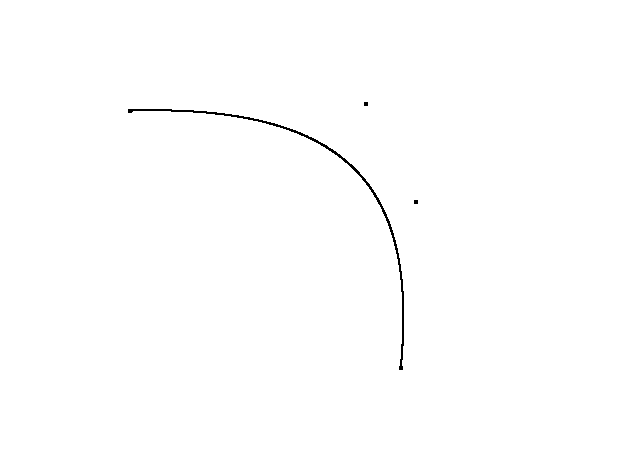
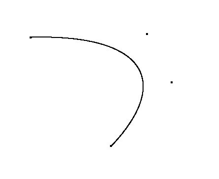
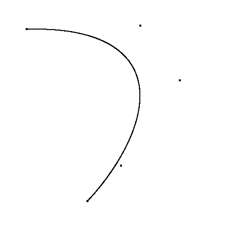

BEZIER CURVE DRAWING
Time to put control points:0.001629

Time to delete control points: 0.003597

Time to drag control points: 0.029475

Remarks:
- Experimentation was done with different refresh rates for glutTimerFunc. We retained 30 from our previous assignment as it allowed us to observe changes made on clicking at a rate we considered optimal.
- We chose to increment the t parameter of the Bezier curve at a rate of 0.001. We found that this provides a good enough picture without the curve breaking into a set of points while also not taking too much time.
- We chose to increment the mouse press cutoff time after which closest point needs to be moved to be 0.02 seconds. It is due to this that we can see an increased amount of time for the point moving operation.
- A distance scanner could have been implemented that affects the control points only if the click is within a certain radius of a point. However, we chose to go with the closest point instead as we were targeting a curve that changes regularly.
Issues:
- Initially, getting the points on the desired position was proving to be tough. Everytime we clicked, the point would be created on a distance slightly away from where we clicked. This was solved by adjusting size of window to be equal to resolution of our screen.
- We would have liked to implement some movement when mouse moves to the screen edges. However, time constraints did not allow us to do so.
References: